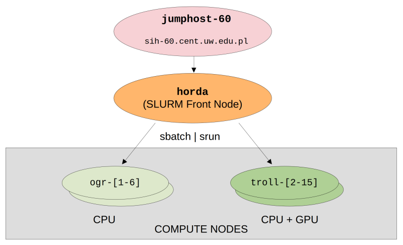

Getting started
Setting up an account
In order to create your an account on the HORDA cluster please contact Maciek or Pawel via e-mail.
** After the account is approved you will receive credentials via e-mail from the it @ cent.uw.edu.pl address.**
The obtained password will allow you to login to the entry node (jumphost-60) at sih-60.cent.uw.edu.pl and from there
to login to the HORDA cluster front-node (ssh horda) and use the compute nodes ogr-[0-1] and troll-[1].
** Please familiarize yourself with the general rules of cluster usage before proceeding further - LINK **
Warning
Important: in case of lost password or other technical difficulties related to the entry node
(not cluster front node or compute nodes) please reach out to the IT department at CeNT UW - address: it @ cent.uw.edu.pl.
Include the [sih-60] prefix in the message title and add cluster administrators @Maciek and @Pawel in CC.
Information
Please note that password changes on each of the compute nodes and the entry node are synced. It is advised to change your initially obtained password after first login.
Connecting via SSH
Connections to the HORDA cluster are handled via SSH protocol. See the figure below for a brief introduction of the network organization:

In order to login to the entry node you can issue the following command:
ssh your_username@sih-60.cent.uw.edu.pl
ssh your_username@horda
In order to simplify file copying and every day work the suggested way of connecting
to the hordacluster is to use sshuttle. This allows to
bypass the login node and work almost the same way as being connected via VPN to the local network.
Example
Assuming sshuttle was installed according to the guide
you can connect as follows:
sshuttle --dns -NHr your_username@sih-60.cent.uw.edu.pl 10.10.60.1/24
ssh your_username@horda.sih-60.internal
Information
Additionally, depending on your computer and network settings, you may have to connect to horda nodes
once without sshuttle so that SSH connections are properly configured.
To avoid putting password during each login you can set up authorization via a certificate - additional information is available here
Work environment
Each user has access to two personal directories:
/home/users/your_username/workspace/your_username
Warning
These folders are shared between all nodes of the HORDA cluster but not with the jumphost-60. Please don't use the jumphost to store large volumes of data.
Transferring files
The recommended options to send or fetch files from HORDA cluster are either scp or rsync.
The storage on the entry host sih-60.cent.uw.edu.pl is very limited therefore it is recommended to setup
sshuttle to send / fetch files directly to the shared space on the horda cluster.
Information
Assuming you established a connection with sshuttle you can directly send files or
directories to the cluster:
scp file.txt your_username@horda.sih-60.internal:~/
Next steps
Once the basics are set up you should be able to start running calculations. Follow the next chapter for more details.